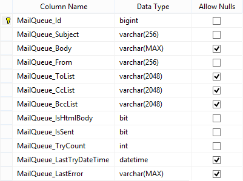

First create the MailQueue table (it is used to store the mails to send and sent)
Compile the solution and run the LayerCake Generator Process to update the code with the new MailQueue table
Edit the MailQueueBusiness class
// Business | MailQueueBusiness.custom.cs namespace Com.Example.Labs.Business { using System; using System.ServiceModel; using System.Threading; using Com.Example.Labs.Core; using Com.Example.Labs.Crud; using Com.Example.Labs.Models; [BusinessClass] public class MailQueueBusiness : BusinessBase { #region [ Business Methods ] /// <summary> /// Used to post a mail (MailQueue) to send on server-side. /// </summary> /// /// <param name="userContext"> /// User context. /// </param> /// /// <param name="mailQueue"> /// MailQueue instance. /// </param> [BusinessMethod] public void PostMailQueue(IUserContext userContext, ref MailQueue mailQueue) { using (var et = new ExecutionTracerService()) using (var db = new MailQueueCrud(userContext)) { db.Save(ref mailQueue); // save the mailQueue in the database } } #endregion #region [ Members ] private static System.Timers.Timer _timer = null; private static CancellationTokenSource _token = new CancellationTokenSource(); #endregion #region [ Public Methods ] /// <summary> /// Start the MailQueue service. /// </summary> /// /// <param name="timerInterval"> /// The interval of the timer. /// </param> public static void Start(TimeSpan timerInterval) { if (_timer == null) { _timer = new System.Timers.Timer(timerInterval.TotalMilliseconds); _timer.Elapsed += OnTimerElapsed; } _token = new CancellationTokenSource(); _timer.Enabled = true; // starts the timer (the OnTimerElapsed will be invoked each timerInterval ms) } /// <summary> /// Stop the MailQueue service. /// </summary> public static void Stop() { _token.Cancel(); if (_timer != null) { _timer.Enabled = false; } } #endregion #region [ Events ] private static void OnTimerElapsed(object sender, EventArgs e) { if (_token.IsCancellationRequested) return; if (_timer.Enabled) { lock (_timer) { if (_timer.Enabled) { _timer.Enabled = false; // disable the timer // Get the default SmtpService instance ISmtpService smtpService = ServiceLocator.Current.Resolve<ISmtpService>(); using (MailQueueCrud db = new MailQueueCrud(ClientContext.Server)) { // Retrieve the unsent mails (with some options)... SearchOptions options = new SearchOptions(); options.Filters.Add(MailQueue.ColumnNames.IsSent, FilterOperator.Equals, false); options.Filters.Add(MailQueue.ColumnNames.TryCount, FilterOperator.LessOrEquals, 20); options.Orders.Add(MailQueue.ColumnNames.Id, OrderOperator.Asc); // older ones options.MaxRecords = 24; // 24 items max foreach (var item in db.Search(ref options)) { if (_token.IsCancellationRequested) break; MailQueue mailQueue = item; try { // Sent the email... smtpService.Send(mailQueue.From, mailQueue.ToList, mailQueue.Subject, mailQueue.Body, new SmtpServiceOptions { Cc = mailQueue.CcList, Bcc = mailQueue.BccList, IsHtmlBody = mailQueue.IsHtmlBody }); mailQueue.IsSent = true; mailQueue.LastError = null; } catch (Exception x) { mailQueue.LastError = x.ToString(); // Store the exception mailQueue.TryCount++; } finally { // Update data... mailQueue.LastTryDateTime = DateTime.Now; try { db.Save(ref mailQueue); } catch (Exception ex) { LoggerService.TraceException(typeof(MailQueueBusiness), ex); } } } } _timer.Enabled = true; // enable again the timer } } } } #endregion } }
Compile again the solution and run the LayerCake Generator Process to update the code with the new MailQueue service (and WCF)
Tests
// Tests var mailQueue_1 = new MailQueue { Subject = "MailQueue Test 1", Body = "Welcome...", From = <email>, ToList = <email>, IsHtmlBody = false }; var mailQueue_2 = new MailQueue { Subject = "MailQueue Test 2", Body = "...and goodbye!", From = <email>, ToList = <email>, IsHtmlBody = false }; // Starts the MailQueue service MailQueueBusiness.Start(TimeSpan.FromSeconds(1)); var business = new MailQueueBusiness(); business.PostMailQueue(ClientContext.Anonymous, ref mailQueue_1); business.PostMailQueue(ClientContext.Anonymous, ref mailQueue_2); // Or on client-side (-> the client asks the server to send emails) //using (var service = new ServiceProxy<IMailQueueService>()) //{ // service.Proxy.PostMailQueue(ClientContext.Anonymous, ref mailQueue_1); // service.Proxy.PostMailQueue(ClientContext.Anonymous, ref mailQueue_2); //} Thread.Sleep(TimeSpan.FromSeconds(5)); // Stops the MailQueue service MailQueueBusiness.Stop();
Database records
MailQueue_Id | MailQueue_Subject | MailQueue_Body | MailQueue_From | MailQueue_ToList | MailQueue_CcList | MailQueue_BccList | MailQueue_IsHtmlBody | MailQueue_IsSent | MailQueue_TryCount | MailQueue_LastTryDateTime | MailQueue_LastError 1 MailQueue Test 1 Welcome... <email> <email> NULL NULL 0 1 0 2014-08-27 19:34:08.133 NULL 2 MailQueue Test 2 ...and goodbye! <email> <email> NULL NULL 0 1 0 2014-08-27 19:34:08.383 NULL
Note: if the From field is not filled then the default value from the configuration file will be used (smtpServiceConfiguration -> 'from' attribute value)